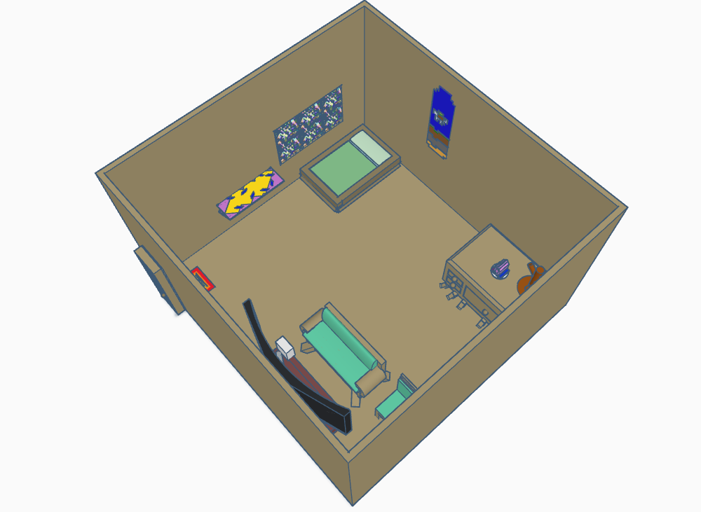
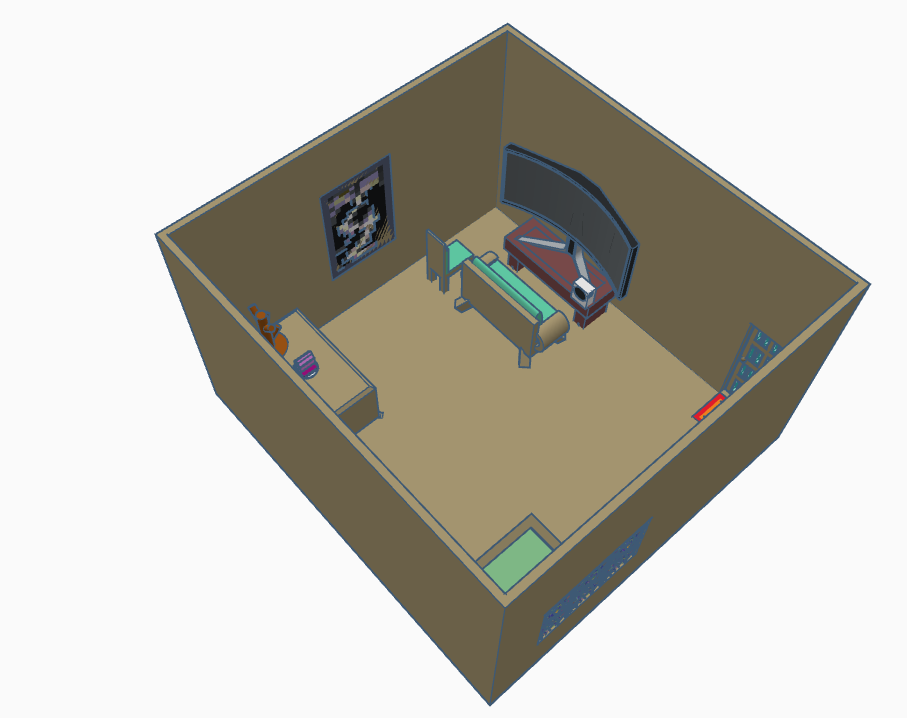
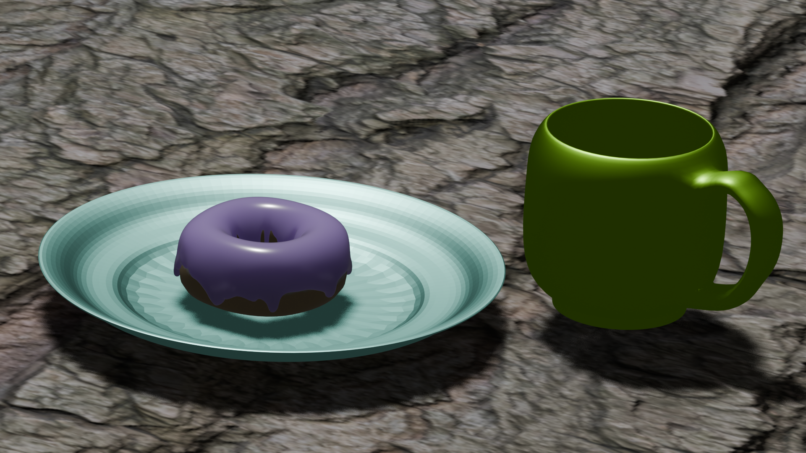

Hello There!
I made a Dream Room in Tinkercad. The theme was a Terraria-like (note the World banner, the Pearlwood furniture, Crystal Platform, and other Terraria-themed furniture.


I also made a Donut in Blender. The donut was meant to be a blueberry-glazed donut on a glass plate, and the mug with coffee, and all on top of a natural wood table.
